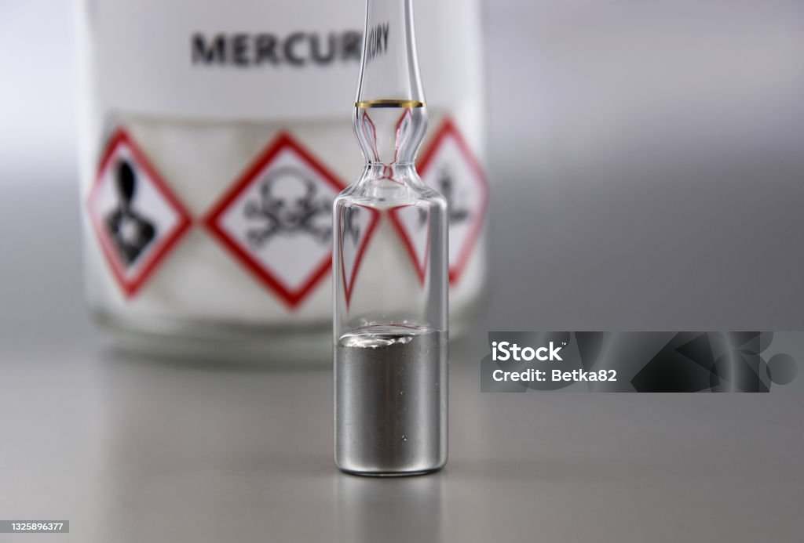
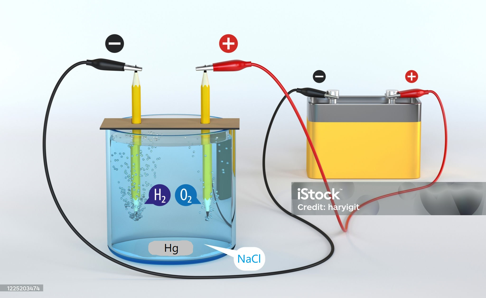

Reducción de pérdidas de Mercurio en la Minería Artesanal
Curso de Reducción de pérdidas de Mercurio en la Minería Artesanal
Fabricación de retorta simple y económica

Descripción del problema
Contaminación ambiental y la enfermedad de Minamata
El uso indiscriminado del mercurio en la minería artesanal y de pequeña escala (MAPE) representa un grave problema ambiental y de salud pública en diversas regiones del mundo. Uno de los casos más críticos se observa en la región de Madre de Dios, Perú, donde la extracción de oro mediante el uso de mercurio ha provocado un daño irreversible a los ecosistemas locales y a la salud de las comunidades.
En Madre de Dios, conocida como uno de los puntos más importantes de la Amazonía peruana, la contaminación por mercurio ha afectado a los ríos, suelos y fauna. Este metal pesado es utilizado para amalgamar el oro extraído, pero una gran parte de este mercurio se libera al ambiente en forma de vapores tóxicos o se filtra al agua, acumulándose en los organismos vivos y entrando en la cadena alimenticia.
La enfermedad de Minamata: un trágico precedente
La enfermedad de Minamata, identificada por primera vez en Japón en los años 50s, es un ejemplo devastador de los efectos de la contaminación por mercurio. Esta enfermedad, causada por la exposición al metilmercurio acumulado en los peces, provocó graves daños neurológicos y la muerte en cientos de personas. Madre de Dios enfrenta hoy una amenaza similar debido a la alta concentración de mercurio en peces consumidos por las comunidades locales.
El compromiso de Perú con el Convenio de Minamata
En su esfuerzo por abordar la crisis de contaminación por mercurio, Perú ratificó el Convenio de Minamata, un acuerdo internacional diseñado para reducir las emisiones y liberaciones de mercurio a nivel global. Este paso representa un compromiso importante por parte del gobierno peruano para combatir los efectos nocivos de este metal en la salud pública y el medio ambiente.
Sin embargo, a pesar de este avance, la realidad en el terreno sigue siendo preocupante. La minería artesanal y de pequeña escala continúa siendo una fuente significativa de contaminación por mercurio.
El aumento del contrabando de mercurio desde Bolivia
Una de las principales complicaciones tras la ratificación de la Convención de Minamata ha sido el incremento del contrabando de mercurio desde Bolivia. Debido a las restricciones en la comercialización legal de este metal, los mineros han recurrido a canales ilícitos para abastecerse de mercurio, lo que dificulta aún más los esfuerzos para controlar su uso y mitigar sus impactos negativos.
El contrabando no solo representa un desafío para la aplicación de las normativas nacionales e internacionales, sino que también exacerba la crisis ambiental y de salud pública. La falta de control efectivo sobre estas actividades ilegales permite que el mercurio continúe ingresando al país y perpetúe el ciclo de contaminación en áreas vulnerables como Madre de Dios.
Impacto en las comunidades locales
En la región de Madre de Dios, muchas comunidades indígenas y rurales dependen de los ríos para su alimentación y sustento. La contaminación por mercurio no solo pone en peligro su salud, sino también su modo de vida tradicional. Estudios recientes han demostrado niveles elevados de mercurio en la sangre de los habitantes, lo que aumenta el riesgo de problemas de desarrollo en los niños y enfermedades crónicas en los adultos.
Seguridad al trabajar con mercurio
El mercurio es un metal pesado ampliamente utilizado en actividades como la minería artesanal y de pequeña escala y su manipulación representa un riesgo significativo para la salud, especialmente debido a la exposición a sus vapores. Estos vapores, que se generan cuando el mercurio se calienta o se manipula en condiciones inadecuadas, pueden tener efectos tóxicos graves tanto a corto como a largo plazo.
Riesgos de la exposición a vapores de mercurio
El mercurio en estado líquido no es tan peligroso como sus vapores. Cuando se calienta o se evapora, libera moléculas que pueden ser inhaladas, lo que permite que el mercurio entre directamente al sistema respiratorio y luego al torrente sanguíneo. Este tipo de exposición puede causar:
- Daño al sistema nervioso: La exposición crónica a vapores de mercurio puede provocar síntomas como temblores, irritabilidad, pérdida de memoria y dificultad para concentrarse.
- Problemas respiratorios: La inhalación de altas concentraciones puede causar tos, dificultad para respirar e inflamación pulmonar.
- Impacto en los riñones: El mercurio inhalado también afecta el sistema renal, lo que puede llevar a insuficiencia renal a largo plazo.
- Riesgo para mujeres embarazadas y niños: La exposición al mercurio es especialmente peligrosa para los fetos en desarrollo y los niños pequeños, ya que puede afectar su desarrollo cerebral y neurológico.
Buenas prácticas para minimizar la exposición
Para reducir los riesgos asociados con los vapores de mercurio, es fundamental seguir las siguientes medidas de seguridad:
- Trabajar en áreas bien ventiladas: La ventilación adecuada es esencial para evitar la acumulación de vapores de mercurio en el aire.
- Usar equipo de protección personal (EPP): Esto incluye mascarillas con filtros específicos para vapores de mercurio, guantes resistentes y gafas de protección.
- Evitar calentar el mercurio al aire libre: Si es necesario calentar mercurio, se debe hacer en sistemas cerrados como retortas que capturen los vapores.
- Almacenar el mercurio de manera segura: Utilizar contenedores sellados y resistentes, evitando derrames que puedan generar vapores.
- Evitar la exposición prolongada: Reducir el tiempo de trabajo en áreas donde el mercurio esté presente y realizar pausas regulares.
La importancia de las retortas para un trabajo seguro con mercurio
Una solución práctica y económica para minimizar la exposición a los vapores de mercurio es el uso de retortas. Estas herramientas permiten capturar los vapores generados durante el proceso de amalgamación y condensarlos en mercurio líquido reutilizable, evitando así que se liberen al ambiente. Además de proteger la salud, las retortas también contribuyen a reducir la contaminación ambiental.
Fabricación de una retorta económica
El uso de una retorta es una solución eficiente y económica para reducir los riesgos asociados con la exposición a vapores de mercurio. Una de las ventajas principales de este dispositivo es que puede ser fabricado de manera sencilla utilizando materiales accesibles que se encuentran fácilmente en el mercado local. Esto lo convierte en una opción ideal para los mineros artesanales y pequeños productores.
¿Qué es una retorta?
Una retorta es un dispositivo cerrado que se utiliza para calentar amalgamas de oro y mercurio, capturando los vapores generados durante el proceso. Estos vapores son condensados dentro del dispositivo, convirtiéndolos nuevamente en mercurio líquido reutilizable. Este proceso no solo protege la salud del operador, sino que también evita la contaminación del aire y reduce la pérdida de mercurio.
Materiales necesarios para construir una retorta económica
La producción de una retorta no requiere herramientas avanzadas ni materiales costosos. Los componentes clave incluyen:
- Tubos de acero inoxidable o hierro: Sirven como el cuerpo principal de la retorta y permiten el paso de los vapores hacia la cámara de condensación.
- Recipiente metálico con tapa ajustada: Actúa como la cámara donde se coloca la amalgama para ser calentada.
- Uniones y conectores: Ayudan a sellar el sistema y prevenir fugas de vapores.
- Un recipiente de agua: Se utiliza para enfriar y condensar los vapores de mercurio en forma líquida.
Beneficios de utilizar una retorta económica
Además de ser accesible y fácil de construir, una retorta económica ofrece varios beneficios importantes:
- Protección de la salud: Al capturar los vapores de mercurio, se evita su inhalación, reduciendo significativamente los riesgos para la salud.
- Reducción de costos: Permite recuperar y reutilizar el mercurio, disminuyendo los gastos de los mineros artesanales.
- Menor impacto ambiental: Evita que los vapores de mercurio se liberen al medio ambiente, contribuyendo a la protección de los ecosistemas.
Puede descargar un archivo PDF con una Guía Práctica sobre la fabricación de retorta a continuación:
Uso del electrolisis para la purificación del Mercurio
El mercurio utilizado en la minería artesanal a menudo se contamina con impurezas debido al contacto con metales y otros elementos presentes en el proceso de amalgamación. Estas impurezas reducen la eficiencia del mercurio y generan riesgos adicionales tanto para el trabajador como para el medio ambiente. El proceso de electrolisis se presenta como una solución técnica eficaz para la purificación del mercurio, permitiendo recuperar hasta un 95-98% de sus propiedades originales.
¿Qué es el proceso de electrolisis?
La electrolisis es un método electroquímico que utiliza una corriente eléctrica para separar las impurezas del mercurio contaminado. Este proceso requiere una celda electrolítica que consta de un ánodo, un cátodo y una solución conductora llamada electrolito.
Materiales y equipo necesario
- Mercurio contaminado: El material que se desea purificar.
- Celda electrolítica: Recipiente adecuado para contener el electrolito y los electrodos.
- Ánodo y cátodo: Normalmente se usan placas de grafito o acero inoxidable como electrodos.
- Electrolito: Una solución salina (por ejemplo, cloruro de sodio) que facilita el paso de la corriente eléctrica.
- Fuente de alimentación: Un transformador de corriente directa (DC) ajustable para generar el voltaje necesario.

Procedimiento para la purificación
- Preparar la celda electrolítica: Llena el recipiente con el electrolito, asegurándote de que cubra completamente los electrodos.
- Colocar los electrodos: Conecta el ánodo y el cátodo dentro de la celda, asegurando que no se toquen entre sí.
- Agregar mercurio contaminado: Introduce el mercurio en el electrolito. Las impurezas metálicas se disolverán en el electrolito o se depositarán en el ánodo.
- Aplicar corriente eléctrica: Conecta la fuente de alimentación y ajusta el voltaje a un nivel adecuado (normalmente entre 3-6 V). Mantén el sistema funcionando durante varias horas.
- Recolectar mercurio purificado: Extrae el mercurio limpio que se acumula en el cátodo. Las impurezas quedarán separadas en el electrolito o en el ánodo.
Ventajas del proceso de electrolisis
- Alta eficiencia: Permite recuperar entre el 95% y el 98% de las propiedades originales del mercurio.
- Reducción de residuos: Se minimizan los desechos peligrosos, ya que las impurezas se quedan atrapadas en el electrolito o el ánodo.
- Economía: El proceso es relativamente económico y no requiere equipos complejos.
- Reutilización: El mercurio purificado puede ser reutilizado en procesos de amalgamación, reduciendo la necesidad de adquirir nuevo material.
Precauciones de seguridad
Es crucial tomar medidas de seguridad al trabajar con electrolisis y mercurio. El sistema debe estar bien ventilado para evitar la acumulación de vapores tóxicos. Además, los trabajadores deben utilizar equipos de protección personal, como guantes resistentes a productos químicos, gafas protectoras y máscaras para vapores.
Tecnologías limpias como alternativas al Mercurio
El mercurio ha sido utilizado durante décadas en la minería artesanal y de pequeña escala para extraer oro debido a su bajo costo y facilidad de uso. Sin embargo, su impacto devastador en la salud humana y el medio ambiente ha llevado a buscar alternativas más seguras y sostenibles. Las tecnologías limpias ofrecen soluciones efectivas que eliminan el uso de mercurio, mejoran la eficiencia y reducen los riesgos asociados.
Alternativas tecnológicas al mercurio
Existen varias tecnologías limpias diseñadas para reemplazar el uso del mercurio en la minería artesanal. Estas tecnologías no solo minimizan el impacto ambiental, sino que también mejoran la recuperación del oro, haciendo que los procesos sean más eficientes y económicos a largo plazo.
1. Concentradores centrífugos
Los concentradores centrífugos, como el conocido Icon o el Knelson, utilizan la fuerza centrífuga para separar las partículas de oro de otros materiales más ligeros. Este equipo es altamente efectivo para recuperar oro fino y tiene una tasa de recuperación que puede superar el 90%.
Ventajas:
- Alta eficiencia en la recuperación de oro fino.
- No requiere el uso de productos químicos tóxicos.
- Fácil de operar y mantener.
2. Mesas vibratorias
Las mesas vibratorias, también conocidas como shaker tables, utilizan movimientos de vibración para separar el oro de otros minerales pesados. Este método es ideal para procesar concentrados y ofrece una alta precisión en la separación.
Ventajas:
- Separación precisa de oro y otros minerales pesados.
- Bajo costo operativo.
- Versatilidad para diferentes tipos de materiales.
3. Canaletas (canales de lavado)
Los canaletas son canales inclinados recubiertos con alfombras o rejillas que atrapan las partículas de oro mientras el agua arrastra los materiales más ligeros. Aunque esta tecnología es tradicional, sigue siendo una herramienta efectiva y económica para la recuperación inicial de oro.
Ventajas:
- Bajo costo y fácil construcción.
- Útil en áreas remotas sin acceso a equipos más avanzados.
- Puede combinarse con otras tecnologías para mejorar la recuperación.
4. Separación por gravedad con bateas
El uso de bateas, aunque básico, sigue siendo una técnica limpia y eficiente para la separación de oro en la minería artesanal. Esta herramienta permite recuperar oro sin necesidad de químicos.
Ventajas:
- Simplicidad y portabilidad.
- Accesible para los mineros de pequeña escala.
- No genera residuos químicos.
Conclusión
La contaminación por mercurio es una problemática global que afecta tanto al medio ambiente como a la salud humana, especialmente en comunidades cercanas a zonas de minería artesanal. Es fundamental implementar tecnologías limpias y promover prácticas responsables para reducir los impactos negativos.
Resolver esta crisis requiere un esfuerzo conjunto entre gobiernos, comunidades y mineros, fomentando soluciones sostenibles que eliminen el uso de mercurio y protejan nuestro planeta para las futuras generaciones.
Duración
Este curso tiene una duración equivalente de 4 horas académicas.
- Mas detalles de Certificación de Curso aqui